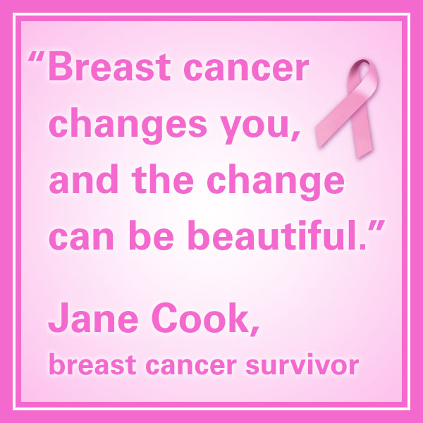
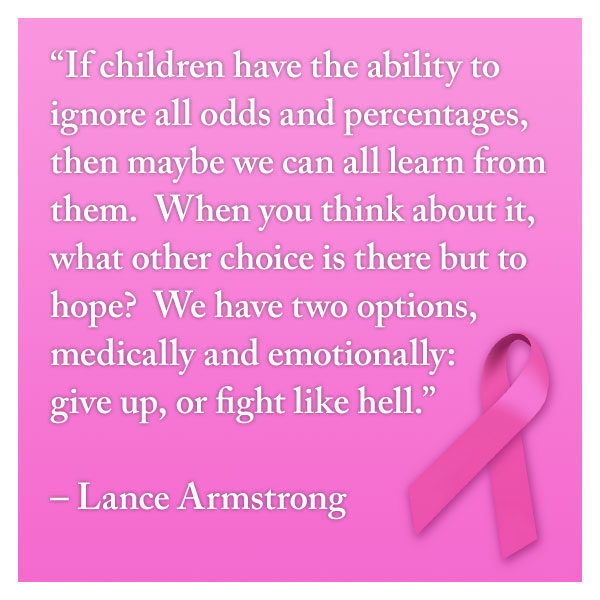
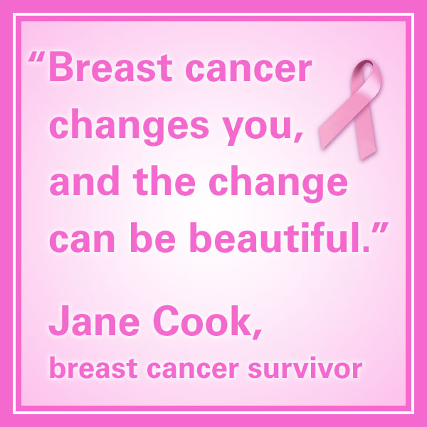
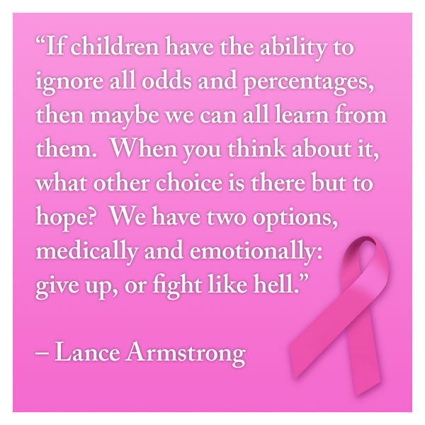

My name is Edison Mejia and I am currently studying Computer Science at Lehman College. I was born in the Dominican Republic and came to this country a couple years ago. I am proficient enough in both spanish and english. I am more of a stay home type of person. However, I do go out with friends on occasions. We sometimes head out to the movie theaters or restaurants to eat, talk and have a good time. Afterall, socializing is a big part of a healthy lifestyle for the most part.